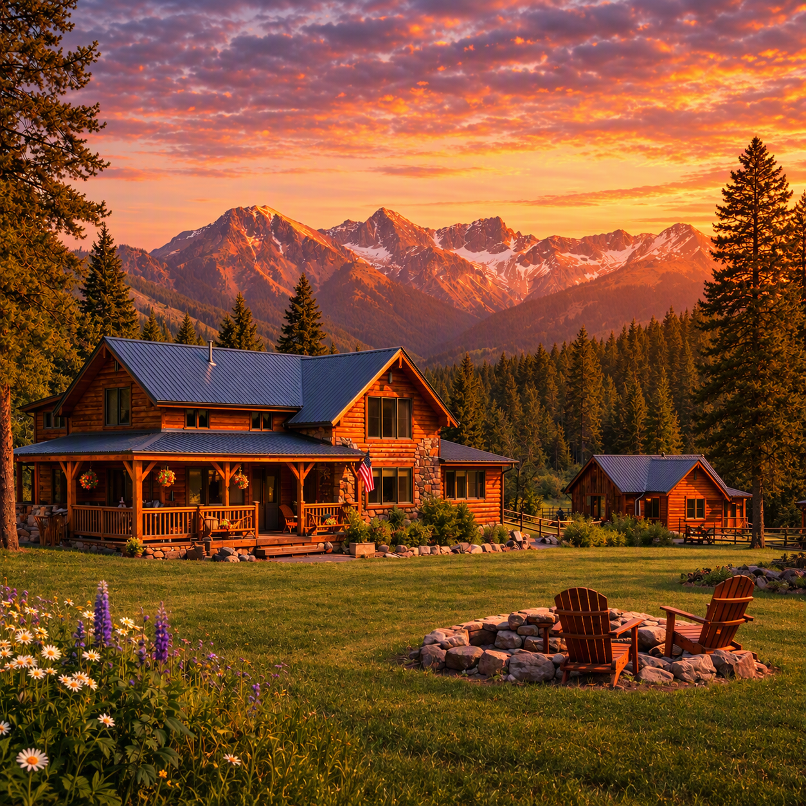

Welcome to Starlight Haven Bed and Breakfast
Starlight Haven is nestled in the beautiful San Juan Mountains, surrounded by tall pines, open skies, and dramatic ridgelines. The setting is calm and naturally scenic, giving guests a place to unwind and enjoy the kind of quiet you only get in the mountains. From the glowing sunrise peaks to stargazing under the clear night skies, the surrounding beauty makes Starlight Haven the perfect destination for an unforgettable adventure.

Your Mountain Stay
Each room at Starlight Haven has its own unique mountain inspired style, with details that reflect the peaceful, star filled nights of the San Juan Mountains. Guests enjoy a homemade breakfast each morning from 6:00 to 9:00 AM, lunch on the go available anytime, and dinner from 6:30 to 9:00 PM, leaving plenty of time throughout the day to explore the property, visit nearby towns, float the river, or hike one of the many trails. From stargazing to short scenic walks, you will never run out of things to do. Weekends offer a variety of activities as well.